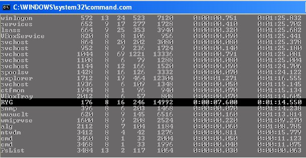
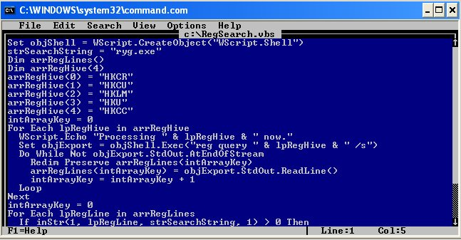
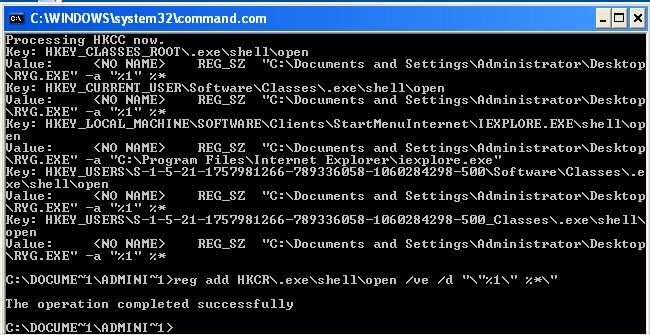

Something I should have done on the first post was to post the MD5 of the virus that I am playing with. So this virus is d3805e63ea463b74cbc22c47fadbfec0 which makes this a Rena.j
- Once I log onto the computer the virus starts up. The first thing that I attempted to do was go to Start, Run, and run cmd.exe But I quickly found out that this virus adds itself to every EXE. So every EXE that is ran opens the virus first.
-
The good thing about these types of viruses is they only block EXE's, so we are able to run COM's instead. So rather than running cmd.exe we would run command.com So once again go to Start, Run, and run command.com
Which will open up a 16-bit CLI. -
Next we will use some of the tools from the PSTools Suite. (If you don't have these installed on the computer, you can always run them remotely, or use the task manager to do this first process). The first command that we will use is pslist. This will list out all of the running processes on the computer. We will use this to identify the virus name and or PID (Process Identifier)

- Now that we have identified the process, we need to kill that process. To kill that process we can either use the name or the PID. The PID is the second column, so in this example it is 176. So we need to run pskill ryg.exe to kill the process associated with the virus.
-
Now that we have killed the virus we need to fix the registry, and since I said this would be all done through the CLI, this becomes a little more fun.
We now need to verify that the EXE key is correct in the registry. To do this we run the command reg query HKEY_CLASSES_ROOT\exefile\shell\open\command

-
Notice how the
starts out with "D:\RYG.EXE". This means that every EXE that is executed will run the virus first. So now we need to update the (Default) with the correct value, which is “%1” %*. The fun part of this is escaping out all of the fun quotes in the value. So the command that needs to be run is reg add HKCR\exefile\shell\open\command /ve /d “\”%1\” %*\”
Pretty much this command addes a registry key overwriting the current one. The /ve means that it is the default value and the /d is the data that needs to be entered.
Now we need to search the registry for any of the ryg.exe. I had originally planned doing this just by commands but it appears that Windows XP has removed the CLI switches for REG, FIND, and FINDSTR which caused me to abandon the commands and the batches files and use some VBScript. - So on the command line type in edit C:\RegSearch.vbs This will open a command line text editor that we will use to create our VBS file.
-
Inside of the editor type in the following:
Set objShell = WScript.CreateObject(“WScript.Shell”)
strSearchString = “ryg.exe”
Dim arrRegLines()
Dim arrRegHive(4)
arrRegHive(0) = “HKCR”
arrRegHive(1) = “HKCU”
arrRegHive(2) = “HKLM”
arrRegHive(3) = “HKU”
arrRegHive(4) = “HKCC”
intArrayKey = 0
For Each lpRegHive in arrRegHive
WScript.Echo “Processing ” & lpRegHive & ” now.”
Set objExport = objShell.Exec(“reg query ” & lpRegHive & ” /s”)
Do While Not objExport.StdOut.AtEndOfStream
Redim Preserve arrRegLines(intArrayKey)
arrRegLines(intArrayKey) = objExport.StdOut.ReadLine()
intArrayKey = intArrayKey + 1
Loop
Next
intArrayKey = 0
For Each lpRegLine in arrRegLines
if inStr(1, lpRegLine, strSearchString, 1) > 0 Then
WScript.Echo “Key: ” & arrRegLines(intArrayKey-2)
WScript.Echo “Value: ” & lpRegLine
End If
intArrayKey = intArrayKey + 1
Next
-
Please not the second line strSearchString = "ryg.exe" This is where you would enter the string that you want to search for. In this case it is ryg.exe Also this VBS was designed for Windows XP, if you want this to work on Windows 7 you need to change the -2 to -3 on the WScript.Echo “Key: ” & arrRegLines(intArrayKey-2) line, else it will not give you the correct key. You may have to play with that negative number to find all of the Keys in Windows XP also, as I found some that did not work, so I had to run the VBS twice to get them all. I also removed all of my comments and variable clean-up from this so it would be easier to type. If you would like me to add those back in let me know. Yes I know this could be optimized more, but I was in a hurry and it took me like 15 mins to code. If requested, I can optimize this too.

- To save this newly typed out VBS you will want to press ALT F S Then to exit you will press ALT F X
- Now to run the VBS to search the registry, you will type in cscript c:\RegSearch.vbs This will then run the VBS and search the registry for all occurrences of ryg.exe and output the registry key and values to the CLI. I chose to use CScript rather than WScript so that the output would go to the CLI rather than a popup windows.
-
If you notice, it does find ryg.exe in other places in the registry, which means that we will need to run reg add again to fix those values as well. Please note the values as these tell you where the files are located at. In my case they are all located in C:\Documents and Settings\Administrator\Desktop They will most likely not be located there on your computer, or at least I hope not.
 REG_SZ 'C:\Documents and Settings\Administrator\Desktop\RYG.EXE' -a '%1' %* Key: HKEY_CURRENT_USER\Software\Classes\.exe\shell\open Value:REG_SZ 'C:\Documents and Settings\Administrator\Desktop\RYG.EXE' -a '%1' %* Key: HKEY_LOCAL_MACHINE\SOFTWARE\Clients\StartMenuInternet\IEXPLORE.EXE\shell\open Value: REG_SZ 'C:\Documents and Settings\Administrator\Desktop\RYG.EXE' -a 'C:\Program Files\Internet Explorer\iexplore.exe' Key: HKEY_USERS\S-1-5-21-1757981266-789336058-1060284298-500\Software\Classes\.exe\shell\open Value: REG_SZ 'C:\Documents and Settings\Administrator\Desktop\RYG.EXE' -a '%1' %* Key: HKEY_USERS\S-1-5-21-1757981266-789336058-1060284298-500_Classes\.exe\shell\open Value: REG_SZ 'C:\Documents and Settings\Administrator\Desktop\RYG.EXE' -a '%1' %* C:\DOCUME~1\ADMINI~1>reg add HKCR\.exe\shell\open /ve /d '\'%1\' %*\' This operation completed successfully" alt="A screenshot of a CLI window which contains the output of the script that was ran: Processing HKCC now. Key: HKEY_CLASSES_ROOT\.exe\shell\open Value: REG_SZ 'C:\Documents and Settings\Administrator\Desktop\RYG.EXE' -a '%1' %* Key: HKEY_CURRENT_USER\Software\Classes\.exe\shell\open Value: REG_SZ 'C:\Documents and Settings\Administrator\Desktop\RYG.EXE' -a '%1' %* Key: HKEY_LOCAL_MACHINE\SOFTWARE\Clients\StartMenuInternet\IEXPLORE.EXE\shell\open Value: REG_SZ 'C:\Documents and Settings\Administrator\Desktop\RYG.EXE' -a 'C:\Program Files\Internet Explorer\iexplore.exe' Key: HKEY_USERS\S-1-5-21-1757981266-789336058-1060284298-500\Software\Classes\.exe\shell\open Value: REG_SZ 'C:\Documents and Settings\Administrator\Desktop\RYG.EXE' -a '%1' %* Key: HKEY_USERS\S-1-5-21-1757981266-789336058-1060284298-500_Classes\.exe\shell\open Value: REG_SZ 'C:\Documents and Settings\Administrator\Desktop\RYG.EXE' -a '%1' %* C:\DOCUME~1\ADMINI~1>reg add HKCR\.exe\shell\open /ve /d '\'%1\' %*\' This operation completed successfully">
- Now that we have cleaned up the registry, we just need to remove the virus itself. To do this just run del “C:\Documents and Settings\Administrator\Desktop\ryg.exe”
- Final step is to reboot the computer and in theory you should be virus free. You can reboot the computer but running shutdown -r
I do realize that steps 5 and 6 could be omitted as the registry search would detect these. But since step 1 already identified that the EXE registry keys were compromized, I figured I would fix the EXE's first. That way if you did not want to deal with the VBS you could just use the GUI (Graphical User Interface) for the rest.
Once again, let me know if you have any questions, or would like to see something else.